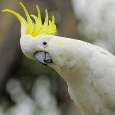

Elisa Beshero-Bondar
Welcome to my website portfolio that I'm modeling for my Fall 2025 Introduction to Digital Humanities Class.

My favorite bird, also one of my favorite childhood pets: a cockatoo! I think this one looks like a teacher.